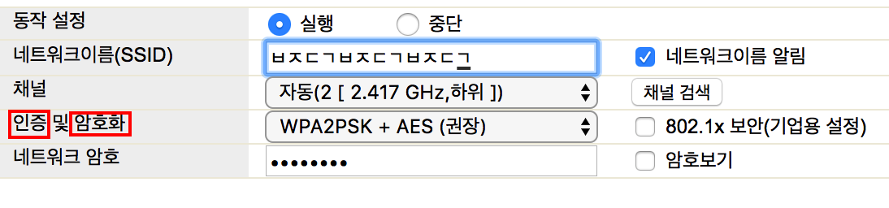
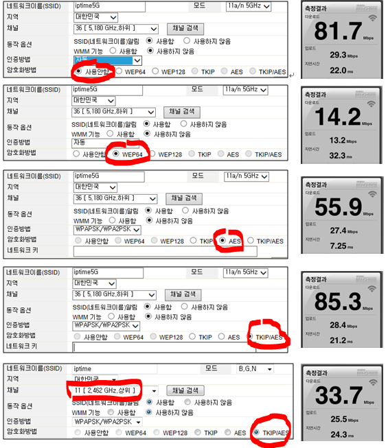

공유기에 암호를 걸어놓는다는 것의 의미

무선 공유기의 보안 때문에 AP에 암호를 걸어놓는 경우가 많다.
여기서 무선 공유기에 암호를 건다는 것은…
- 무선 공유기에 타인이 접속하는 걸 방지하고자 암호를 건다.
(WPA2PSK와 같은 방식으로…) 송수신하는 데이터(평문으로 된 개인정보 등등)을 암호화 하고자 데이터를 암호화 한다.
(AES와 같은 알고리즘으로…)
하지만 암호를 걸어놓음으로써 인터넷 속도가 줄어든다는 사실을 알고 있는가?
Why?
우리가 보내는 데이터 -> 암호화 -> 전송과 같이
‘암호화’의 단계가 포함되기 때문에 당연히 느려질 수 밖에 없다.
그럼으로 인해서 아예 암호를 걸어놓지 않고 사용하는 사람들이 있다.
공유기에 암호 걸지 않고 사용하기
이러한 방법은 매우 위험하다.
타인이 나의 AP로 접근하여 동영상 등등의 기타 데이터를 마구 발생시키고 있다면
자신이 쓸 수 있는 속도가 줄어든다.
10MiB/s를 두 명이 나눠쓰면 5MiB/s로 줄어들거나
동영상을 받고 있는 유저가 거의 10MiB/s 가까이 끌어다 쓰는 등등…
혹은 한 AP에 접속된 기기가 많을 수록 혼선이 발생되는 등등 인터넷 접속이 불안정해지게 된다.
이를 해결하기 위한 여러가지 방안이 있지만 대표적인 몇 가지를 소개하고자 한다.
물론 암호화를 진행하고 이 방안까지 쓴다면 보안에 금상첨화이다.
- MAC 주소 인증
MAC 주소는 컴퓨터 부품 중 하나인 LAN 카드에 있는 ‘고유’한 정보로서,
IP 주소와 달리 LAN 카드를 바꾸지 않는한 영구적이다.
또한 MAC 주소는 전 세계적으로 유일한 번호이므로 어찌 보면 ‘개인 정보’ 영역에도 속해서
액티브 X 등등을 쓰지 않는 한 보안상 수집을 할 수 없다.
이러한 MAC 주소의 ‘유일성’을 통해서 ‘인증된 MAC 주소’만 접속을 허용하게끔 하는 것이다.
물론 MAC 주소를 바꾸는 방법이 존재하긴 하지만,
인증된 MAC 주소를 알아내는 건 그리 쉬운 일이 아니다.
또한 새로운 기기를 추가할 때마다 MAC 주소를 추가해야된다는 번거로움이 존재한다. - SSID 숨기기.
이 방법은 SSID 이름을 맞춰야만 해당 AP로 접속할 수 있게 하는 방법이다.
사람들이 쉽게 생각할 수 없는 문자(특수문자)들의 조합으로
SSID를 지정하면 쉽게 찾아낼 수가 없을 것이다.
공유기에 암호를 걸지 않는 것의 의미
우리가 흔히 쓰는 무선 공유기는 송수신 하는 패킷(메시지, 데이터를 자잘하게 쪼갠 단위)을 기본적으로 암호화하지 않는다.
잘 만들어진 사이트는 사이트 자체적(https 프로토콜 등등)으로 패킷을 암호화 하는 방법을 통해 보안을 유지하고 있다.
하지만 우리가 사용하는 사이트가 모두 그렇게 잘 만들어진 사이트인가?
보안에 그만큼 신경 쓴 사이트라면 비용이 비쌀테니 개인이나 소규모 기업 같은 경우에는
크게 신경을 쓰지 않는 경우도 많다.
잘 만들어진 사이트인지 일일이 확인하고 쓰기도 번거로울 뿐더러 알아내기도 쉽지 않다.
즉 그러한 사이트를 이용하면 우리의 개인정보가
고스란히 평문으로써 보이지 않는 공간에 날아다니게 된다.
이러한 패킷들을 가로채는 건 해커들에겐 식은 죽 먹기다.
흔히 생각하는 ‘무선 공유기 암호’는 ‘AP의 접근 인증’ 외에도'송수신 패킷(데이터) 암호화'도 포함돼있다.
공짜라고, 비밀번호가 걸려있지 않다고, 옆 집에 있는 와이파이를 훔쳐쓰다가
친구한테 몰래 보낸 메일이나 사이트의 비밀번호 등등이 크래커에게 고스란히 노출될 수 있다.
옆 집 사람이 크래커라서 의도적으로 공개를 해놓은 건지도 모른다.
공개 AP를 쓸 때는 보안에 민감하지 않은 작업만 하자.
공유기 암호화에 대한 다른 비밀
암호화 방법이 여러 개 있고, 암호화 방법에 따라서 인터넷 속도도 천차 만별이다.
출처는 아래 링크와 같다.
iptime 암호화 방법에 따라 속도 차이가 엄청나군요.

복잡한 알고리즘, 안전한 알고리즘일 수록 느리지 않을까…
뭐 꼭 그렇다는 것만은 아니지만…
하지만 여러 가지의 암호화 방법 중 ‘안전하지 않은’ 암호화 방식도 있다.
이 말은 암호화를 걸었는데 이미 크래커들에게 뚫린 방식일 수도 있다는 뜻이다.
802.11N 방식(100메가 광랜)에서는 WPA2PSK + AES 방식을 쓰는 게 가장 좋을 것 같다.
WiFi 공유기 암호방식, 꼭 WPA2-AES를 써야하는 이유는?
802.11AC 방식(기가 광랜)에서는 어떤 방식이 제일 좋은지는 모르겠다.
TKIP 방식의 암호화 알고리즘은 802.11N 방식을 지원하지 않는다는 것 같다.
공유기 암호화방법 변경으로 무선/WIFI 속도 제대로 활용하기!
비밀번호를 걸지 않고, 송수신 데이터만 암호화 하는 방법이 존재하는지 모르겠지만,
어지간하면 비밀번호가 걸려있지 않은 공개 AP는 쓰지 않는 게 좋고,
꼭 써야한다면 보안에 민감하지 않은 작업만 하자.
또한 소 잃고 외양간 고치기 싫은 사람들은
- 무선 공유기를 WPA2PSK + AES 방식의 암호화 방법을 적용시키거나…
- 속도를 포기하기 싫으신 분은 귀찮으시더라도 유선랜을 쓰도록 하자…